Convite
Festa Junina do Inah
Sábado, a partir das 15h, na sede. Traga a família!

Versão 1.0 · Outubro de 2026
Regras e exemplos para usar a marca do grupo em posts, convites, camisetas, documentos e nos materiais dos ramos.
O Inah educa crianças e jovens em Santo André desde 1961. A marca precisa mostrar o que acontece todo sábado na sede: aventura ao ar livre, acolhimento e responsabilidade com a comunidade.
Contribuir para a educação de crianças, adolescentes e jovens, mediante um sistema de valores, baseado na Promessa e Lei Escoteiras, para que participem na construção de um mundo melhor, no qual se desenvolvam plenamente e desempenhem um papel construtivo na sociedade.
A mesma missão dos Escoteiros do Brasil.Ser um espaço seguro, garantindo suporte adequado do adulto voluntário, em parceria com as famílias, e com recursos necessários, para que os jovens se desenvolvam e atuem no desenvolvimento de suas comunidades.
Respeito às diferenças, em suas várias dimensões, e defesa permanente dos direitos humanos.
Respeito aos preceitos legais, morais, justos e éticos em todas as ações e relações.
Busca pela eficácia, qualidade e melhoria contínua em todas as ações.
Promoção do engajamento de todos e compartilhamento de opiniões, na busca de posições e decisões resultantes da reflexão coletiva.
Adequação para acolher as diferentes características e necessidades das pessoas que compõem a sociedade.
Capacidade de implementar novas ideias e buscar soluções criativas para êxito e permanente atualização da organização.
Empenho com a transformação social, com a educação infantojuvenil e impacto gerado nas comunidades.
Responsabilidade com o meio ambiente, os recursos e a sociedade, e adoção de práticas sustentáveis.
Disposição em compartilhar experiências, valorizar o trabalho coletivo e manter relacionamentos com outras instituições.
Ações visíveis e claras na gestão da organização e dos recursos em todos os níveis.
Harmonia nas ações, em todos os níveis, fortalecendo a identidade unificada e a presença dos Escoteiros do Brasil na sociedade.
A Promessa e a Lei Escoteira guiam o que fazemos. No site: “Educação através de um sistema de valores”.
Jogos, acampamentos e trilhas. “Aprender fazendo e com contato com a natureza.”
Mais de 60 anos de história e mais de 2 mil famílias impactadas diretamente, com um grupo feito por voluntários.
| Situação | Forma | Exemplo |
|---|---|---|
| Documentos oficiais, ofícios, contratos | Grupo Escoteiro Professora Inah de Mello – 147/SP | Cabeçalho de ata, recibo, termo de parceria |
| Marca horizontal e peças de divulgação | Grupo Escoteiro Profª Inah de Mello | Convite da Festa Junina Beneficente |
| Conversa, redes sociais, chamadas | Inah | “Faça parte do Inah!” |
| Endereços digitais | gepim.com.br · @inah.147 | Rodapé de posts e cartazes |
Escreva o número como 147/SP, sem “º”. Evite siglas como “GEPIM” ou “GE Inah” em títulos e textos corridos: o manual dos Escoteiros do Brasil pede o nome do grupo por extenso. GEPIM fica restrito ao endereço do site.
No título do site, siga o padrão nacional: Grupo Escoteiro Professora Inah de Mello – Escoteiros do Brasil – São Paulo.
A marca tem três versões. Todas usam a mesma flor de lis verde e o mesmo azul. O que muda é a forma e o lugar onde cada uma funciona melhor.

Versão principal
Flor de lis, número e nome do grupo. Use sempre que o público não conhece o grupo: documentos, site, faixas, convites e materiais com parceiros.

Versão afetiva
Lettering manuscrito “Inah” sobre a flor de lis. Para quem já conhece o grupo: camisetas, redes sociais, foto de perfil, brindes e materiais internos. É preferível ao selo.

Uso restrito
O símbolo dentro de um círculo verde. Só para formatos que exigem círculo, como bottons, patches e adesivos redondos. Fora deles, use o símbolo.
| Peça | Versão |
|---|---|
| Ofício, papel timbrado, recibo, certificado | Marca horizontal |
| Site, assinatura de e-mail, faixa, banner | Marca horizontal |
| Divulgação para quem ainda não conhece o grupo | Marca horizontal |
| Post para a comunidade do grupo, foto de perfil, camiseta, caneca | Símbolo Inah |
| Botton, patch ou adesivo redondos | Selo, só quando o formato redondo é obrigatório |
| Sobre foto, degradê ou fundo colorido | Marca horizontal ou símbolo em tarjeta (ver 2.7) |
| Sobre o Verde Inah | Símbolo com flor branca (ver 2.4) |
| Fundo escuro | Marca horizontal negativa, de preferência; ou símbolo na tarjeta ou em sticker; ou flor sozinha (ver 2.4) |
| Adesivo recortado, peças sobre texturas e fotos | Sticker (ver 2.8) |
| Grafismo de fundo | Flor sozinha (ver 6.1) |
| Carimbo, serigrafia ou bordado de uma cor | Marca horizontal em uma cor (ver 2.5) |
O símbolo é formado por duas peças, cada uma com seu arquivo original: a flor de lis e o lettering “Inah”. A versão completa é a mais usada. As peças separadas entram como apoio: a flor como grafismo, e o lettering sozinho em peças em que o grupo já está identificado, como a manga de uma camiseta ou o verso de um botton.


Use sempre os arquivos originais de cada peça. Não redesenhe, não recombine em outra posição e não troque a flor por outra flor de lis.
Nenhum texto, borda de página, foto recortada ou outra marca entra nessa área.
Abaixo desses tamanhos a linha “147/SP – Grupo Escoteiro” e o lettering deixam de ser lidos. Fotos de perfil, que a própria rede reduz, são a única exceção.


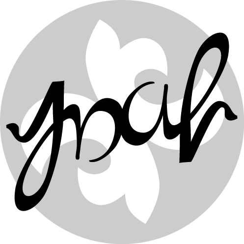
Todas as versões usam o mesmo desenho da flor e do lettering; muda apenas a cor de cada peça. O símbolo não tem versão negativa: para fundos escuros, veja a seguir.
O símbolo não é aplicado direto sobre fundos escuros: em qualquer combinação de cores, o lettering perde contraste onde cruza a flor. Sobre o Azul Inah, malhas escuras e fotos escuras, use uma destas opções, nesta ordem de preferência.

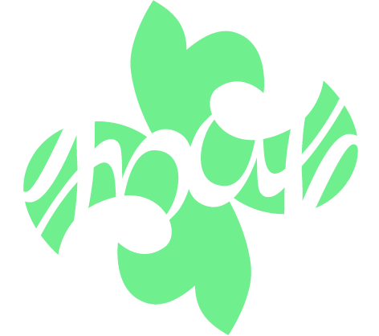


Só a marca horizontal tem versão de uma cor. No símbolo e no selo o lettering passa por cima da flor; em uma cor chapada, as duas peças se fundiriam.
Para aplicar a marca sobre fotos, degradês, fundos coloridos e fundos escuros, coloque a versão positiva numa tarjeta branca de cantos arredondados. A marca horizontal usa um retângulo; o símbolo, um quadrado.
A tarjeta é a assinatura da peça, não o assunto. A horizontal ocupa no máximo metade da largura da peça; a do símbolo, no máximo 30% do menor lado. A marca dentro dela nunca fica abaixo do tamanho mínimo (2.3).
A tarjeta pode ficar solta ou sair pela borda da página como uma aba. Basta sair por um lado; sair por um canto também é possível. O branco aumenta até passar do corte e sobra só a marca com sua margem. A linha tracejada é a borda da página: o que passa dela é sobra, cortada na impressão.
O símbolo positivo com um contorno branco que acompanha o desenho, como um adesivo recortado. O branco também preenche os vãos entre as letras e a flor. Assim como a tarjeta, o sticker leva o fundo branco junto, por isso funciona sobre fundos escuros, fotos, degradês e texturas.
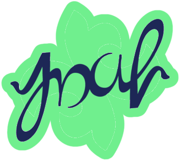
InahDuas cores fazem a marca. O Azul Inah conduz e o Verde Inah destaca. Em volta delas, quatro paletas complementares dão variedade às peças sem perder a identidade. Toque em qualquer código HEX para copiar.
Cor principal. Lettering, nome do grupo, títulos e fundos.
Cor de destaque. Flor de lis, grafismos e textos sobre o azul. Nunca em texto sobre branco.
Os valores CMYK deste manual seguem o perfil FOGRA39 (papel couché); os cinzas usam só preto (K). Confirme sempre com a gráfica.
Proporção de referência. Em peças de fundo azul, inverta: o azul ocupa a maior área e o branco vira texto.
RGB 0 · 0 · 0CMYK 0 · 0 · 0 · 100
RGB 51 · 51 · 51CMYK 0 · 0 · 0 · 80
RGB 102 · 102 · 102CMYK 0 · 0 · 0 · 60
RGB 153 · 153 · 153CMYK 0 · 0 · 0 · 40
RGB 204 · 204 · 204CMYK 0 · 0 · 0 · 20
Cada paleta parte do Azul Inah ou do Verde Inah e soma cores do mundo escoteiro: a mata, o rio, a fogueira. Escolha uma paleta por peça e não misture duas.
Documentos, ofícios, site e tudo o que é institucional. É a paleta padrão.
Azul Inah
RGB 29 · 39 · 86CMYK 98 · 83 · 0 · 55
Branco
RGB 255 · 255 · 255CMYK 0 · 0 · 0 · 0
Verde Inah
RGB 112 · 239 · 142CMYK 45 · 0 · 49 · 0
Cinza 80
RGB 51 · 51 · 51CMYK 0 · 0 · 0 · 80
Acampamentos, trilhas e atividades ao ar livre. Inspirada na mata de Paranapiacaba.
Verde Mata
RGB 22 · 121 · 74CMYK 86 · 16 · 84 · 29
Verde Inah
RGB 112 · 239 · 142CMYK 45 · 0 · 49 · 0
Verde Folha
RGB 194 · 240 · 106CMYK 31 · 0 · 68 · 0
Azul Inah
RGB 29 · 39 · 86CMYK 98 · 83 · 0 · 55
Terra
RGB 122 · 78 · 45CMYK 36 · 64 · 92 · 43
Areia
RGB 244 · 232 · 208CMYK 7 · 9 · 22 · 0
Redes sociais e peças para jovens. É a paleta mais luminosa.
Azul Inah
RGB 29 · 39 · 86CMYK 98 · 83 · 0 · 55
Azul Céu
RGB 47 · 111 · 216CMYK 83 · 54 · 0 · 0
Rio
RGB 31 · 181 · 165CMYK 72 · 1 · 44 · 2
Verde Inah
RGB 112 · 239 · 142CMYK 45 · 0 · 49 · 0
Névoa
RGB 238 · 245 · 241CMYK 7 · 4 · 7 · 0
Festas, Fogo de Conselho, aniversário do grupo e eventos à noite.
Azul Noite
RGB 14 · 20 · 51CMYK 97 · 75 · 0 · 83
Azul Inah
RGB 29 · 39 · 86CMYK 98 · 83 · 0 · 55
Laranja Fogueira
RGB 255 · 122 · 61CMYK 0 · 64 · 84 · 0
Amarelo Lanterna
RGB 255 · 212 · 71CMYK 4 · 16 · 81 · 0
Verde Inah
RGB 112 · 239 · 142CMYK 45 · 0 · 49 · 0
Tons claros e escuros das cores da marca, para fundos de cartões, tabelas, botões e gráficos.
RGB 14 · 20 · 51CMYK 97 · 75 · 0 · 83
RGB 29 · 39 · 86CMYK 98 · 83 · 0 · 55
RGB 92 · 99 · 133CMYK 65 · 52 · 17 · 29
RGB 160 · 164 · 184CMYK 41 · 31 · 18 · 5
RGB 228 · 229 · 235CMYK 13 · 9 · 8 · 0
RGB 29 · 85 · 57CMYK 91 · 33 · 87 · 50
RGB 67 · 154 · 95CMYK 74 · 7 · 76 · 13
RGB 112 · 239 · 142CMYK 45 · 0 · 49 · 0
RGB 176 · 246 · 193CMYK 27 · 0 · 27 · 0
RGB 229 · 252 · 235CMYK 9 · 1 · 10 · 0
O Verde Inah é mais vivo do que a impressão em quatro cores consegue reproduzir. Em papel ele sai mais apagado, como na simulação ao lado. O mesmo vale para o Verde Folha.
Para camisetas, faixas e adesivos, peça à gráfica uma cor especial (Pantone) próxima do verde e aprove uma prova impressa antes da tiragem.
Contraste medido pelo padrão WCAG. A partir de 4,5:1 o texto é legível em qualquer tamanho. Entre 3:1 e 4,5:1, só em títulos grandes. Abaixo de 3:1, a combinação serve só para formas e grafismos.
Use o Azul Inah para títulos, eixos e séries principais. Reserve o Verde Inah para destacar um dado importante, sempre com rótulo. Para séries categóricas, prefira as cores da identidade do grupo mostradas abaixo. Como alguns tons são próximos para certas pessoas, combine cada cor com rótulos, marcadores ou padrões próprios.
O Verde Inah não tem contraste suficiente para texto sobre branco. Use-o em uma área, marcador ou linha acompanhada por rótulo, não como texto nem como único sinal de uma categoria.
Use uma cor por categoria e mantenha a mesma ordem na legenda e no gráfico. Se houver mais de oito categorias, agrupe-as ou use rótulos diretos em vez de acrescentar cores parecidas.
Para valores que vão do menor ao maior, use uma única família. A escala azul existente vai do claro (menor) ao escuro (maior).
Use a escala Azul 100 → Azul 900 do item 3.4 e mostre os valores na legenda.
Para valores abaixo e acima de um ponto central, como zero. Azul e vermelhão ficam em lados opostos; o centro neutro marca a referência.
Marque o zero ou valor de referência e identifique os sinais − e +.
Os valores a seguir são fictícios e servem apenas para mostrar como aplicar as cores e os recursos de leitura acessível.
Use estas combinações como ponto de partida ao montar uma peça no Canva. O fundo pode ser aplicado como cor sólida ou gradiente; elementos e todos os níveis de texto usam apenas cores sólidas. Em gradientes com áreas claras e escuras, escolha a cor do texto de acordo com o trecho onde ele ficará. Toque nos códigos HEX para copiá-los.
Institucional, documentos e peças informativas.
Uma opção vibrante para destacar chamadas e peças do grupo.
Natureza, acampamentos e atividades ao ar livre.
Peças leves, redes sociais e atividades com jovens.
Festas, celebrações e encontros ao redor da fogueira.
Apresentações, telas e peças para atividades noturnas.
Convites e peças leves com cores luminosas.
Uma alternativa tropical para eventos e atividades ao ar livre.
Seguindo o Tema Anual 2026 dos Escoteiros do Brasil, degradês e fitas dão movimento às peças digitais. No Inah, eles sempre partem das cores das paletas e passam só entre cores vizinhas.
Seis degradês, dos claros aos escuros. A etiqueta de cada um diz qual cor de texto funciona em toda a extensão, com contraste mínimo de 4,5:1.
Texto azul na parte clara, branco na escura
O degradê principal. Capas, banners e fundos de redes sociais.
Verde Inah 0%
RGB 112 · 239 · 142CMYK 45 · 0 · 49 · 0
Rio 38%
RGB 31 · 181 · 165CMYK 72 · 1 · 44 · 2
Azul Céu 70%
RGB 47 · 111 · 216CMYK 83 · 54 · 0 · 0
Azul Inah 100%
RGB 29 · 39 · 86CMYK 98 · 83 · 0 · 55
Texto azul na parte clara, branco na escura
Natureza, acampamentos e atividades ao ar livre.
Verde Folha 0%
RGB 194 · 240 · 106CMYK 31 · 0 · 68 · 0
Verde Inah 42%
RGB 112 · 239 · 142CMYK 45 · 0 · 49 · 0
Verde Mata 100%
RGB 22 · 121 · 74CMYK 86 · 16 · 84 · 29
Texto azul em qualquer ponto
Peças leves e alegres, convites para famílias.
Amarelo Lanterna 0%
RGB 255 · 212 · 71CMYK 4 · 16 · 81 · 0
Verde Folha 50%
RGB 194 · 240 · 106CMYK 31 · 0 · 68 · 0
Verde Inah 100%
RGB 112 · 239 · 142CMYK 45 · 0 · 49 · 0
Texto azul em qualquer ponto
Festas, Fogo de Conselho e eventos.
Amarelo Lanterna 0%
RGB 255 · 212 · 71CMYK 4 · 16 · 81 · 0
Laranja Fogueira 100%
RGB 255 · 122 · 61CMYK 0 · 64 · 84 · 0
Texto branco em qualquer ponto
Fundos escuros, apresentações e telas.
Azul Céu 0%
RGB 47 · 111 · 216CMYK 83 · 54 · 0 · 0
Azul Inah 55%
RGB 29 · 39 · 86CMYK 98 · 83 · 0 · 55
Azul Noite 100%
RGB 14 · 20 · 51CMYK 97 · 75 · 0 · 83
Texto branco em qualquer ponto
Fundo escuro com cara de mata fechada, para acampamentos e jornadas.
Verde Mata 0%
RGB 22 · 121 · 74CMYK 86 · 16 · 84 · 29
Azul Inah 60%
RGB 29 · 39 · 86CMYK 98 · 83 · 0 · 55
Azul Noite 100%
RGB 14 · 20 · 51CMYK 97 · 75 · 0 · 83
Texto azul na parte clara, branco na escura
Água e céu em uma combinação luminosa para atividades ao ar livre.
Rio 0%
RGB 31 · 181 · 165CMYK 72 · 1 · 44 · 2
Azul Céu 100%
RGB 47 · 111 · 216CMYK 83 · 54 · 0 · 0
O ângulo e a posição de cada cor (%) servem para montar o degradê no Canva, no Figma ou em CSS.
Fundos suaves com várias cores que se misturam, como nas capas do Tema 2026. São cinco: duas escuras, em que o texto branco funciona em qualquer ponto, e três mistas, em que a cor do texto acompanha a região. Funcionam bem em stories, capas de vídeo e telas de apresentação.
Texto conforme a região
Texto azul na área clara do canto superior.
Verde Folha
RGB 194 · 240 · 106CMYK 31 · 0 · 68 · 0
Verde Inah
RGB 112 · 239 · 142CMYK 45 · 0 · 49 · 0
Rio
RGB 31 · 181 · 165CMYK 72 · 1 · 44 · 2
Azul Céu
RGB 47 · 111 · 216CMYK 83 · 54 · 0 · 0
Azul Inah
RGB 29 · 39 · 86CMYK 98 · 83 · 0 · 55
Texto conforme a região
Texto azul no canto verde; branco no canto azul.
Verde Inah
RGB 112 · 239 · 142CMYK 45 · 0 · 49 · 0
Rio
RGB 31 · 181 · 165CMYK 72 · 1 · 44 · 2
Azul Céu
RGB 47 · 111 · 216CMYK 83 · 54 · 0 · 0
Azul Inah
RGB 29 · 39 · 86CMYK 98 · 83 · 0 · 55
Texto branco em qualquer ponto
Escura. Apresentações e stories.
Azul Noite
RGB 14 · 20 · 51CMYK 97 · 75 · 0 · 83
Azul Inah
RGB 29 · 39 · 86CMYK 98 · 83 · 0 · 55
Azul Céu
RGB 47 · 111 · 216CMYK 83 · 54 · 0 · 0
Verde Inah
RGB 112 · 239 · 142CMYK 45 · 0 · 49 · 0
Texto branco em qualquer ponto
Escura, com um brilho de mata.
Azul Noite
RGB 14 · 20 · 51CMYK 97 · 75 · 0 · 83
Azul Inah
RGB 29 · 39 · 86CMYK 98 · 83 · 0 · 55
Verde Mata
RGB 22 · 121 · 74CMYK 86 · 16 · 84 · 29
Azul Céu
RGB 47 · 111 · 216CMYK 83 · 54 · 0 · 0
Texto conforme a região
Texto branco na parte de cima, longe do brilho.
Azul Noite
RGB 14 · 20 · 51CMYK 97 · 75 · 0 · 83
Azul Inah
RGB 29 · 39 · 86CMYK 98 · 83 · 0 · 55
Laranja Fogueira
RGB 255 · 122 · 61CMYK 0 · 64 · 84 · 0
Amarelo Lanterna
RGB 255 · 212 · 71CMYK 4 · 16 · 81 · 0
Faixas curvas em degradê representam a trilha: caminhos que se cruzam e levam o grupo junto. Podem levar palavras do grupo escritas ao longo da curva.
Fitas largas levam frases curtas em caixa alta, como títulos. Funcionam sobre fotos, capas e banners.
Foto: R. T. Argenton, CC BY-SA 4.0.
Quatro famílias de textura para fundos de cards, capas de destaques, laterais de cartazes e camisetas. Use uma textura por peça.
Fitas em degradê que se cruzam sobre uma cor de base, recortadas em pílula.
Cores usadas
Verde Inah
RGB 112 · 239 · 142CMYK 45 · 0 · 49 · 0
Azul Inah
RGB 29 · 39 · 86CMYK 98 · 83 · 0 · 55
Verde Folha
RGB 194 · 240 · 106CMYK 31 · 0 · 68 · 0
Azul Céu
RGB 47 · 111 · 216CMYK 83 · 54 · 0 · 0
Areia
RGB 244 · 232 · 208CMYK 7 · 9 · 22 · 0
Rio
RGB 31 · 181 · 165CMYK 72 · 1 · 44 · 2
Amarelo Lanterna
RGB 255 · 212 · 71CMYK 4 · 16 · 81 · 0
Verde Mata
RGB 22 · 121 · 74CMYK 86 · 16 · 84 · 29
Azul Noite
RGB 14 · 20 · 51CMYK 97 · 75 · 0 · 83
Terra
RGB 122 · 78 · 45CMYK 36 · 64 · 92 · 43
Faixas paralelas em degradê, alternando duas cores, como trilhas lado a lado.
Cores usadas
Azul Céu
RGB 47 · 111 · 216CMYK 83 · 54 · 0 · 0
Verde Inah
RGB 112 · 239 · 142CMYK 45 · 0 · 49 · 0
Azul Noite
RGB 14 · 20 · 51CMYK 97 · 75 · 0 · 83
Areia
RGB 244 · 232 · 208CMYK 7 · 9 · 22 · 0
Verde Folha
RGB 194 · 240 · 106CMYK 31 · 0 · 68 · 0
Rio
RGB 31 · 181 · 165CMYK 72 · 1 · 44 · 2
Azul Inah
RGB 29 · 39 · 86CMYK 98 · 83 · 0 · 55
Terra
RGB 122 · 78 · 45CMYK 36 · 64 · 92 · 43
Verde Mata
RGB 22 · 121 · 74CMYK 86 · 16 · 84 · 29
Como nas cartas topográficas usadas em orientação e jornadas. A cada cinco curvas, uma mais grossa: a curva mestra.
Cores usadas
Azul Inah
RGB 29 · 39 · 86CMYK 98 · 83 · 0 · 55
Verde Inah
RGB 112 · 239 · 142CMYK 45 · 0 · 49 · 0
Areia
RGB 244 · 232 · 208CMYK 7 · 9 · 22 · 0
Verde Mata
RGB 22 · 121 · 74CMYK 86 · 16 · 84 · 29
Azul Noite
RGB 14 · 20 · 51CMYK 97 · 75 · 0 · 83
Azul Céu
RGB 47 · 111 · 216CMYK 83 · 54 · 0 · 0
A flor do símbolo repetida em tamanho pequeno, sempre na mesma inclinação. Tom sobre tom serve de fundo para texto; em contraste, só em peças sem texto por cima.
Cores usadas
Azul Inah
RGB 29 · 39 · 86CMYK 98 · 83 · 0 · 55
Azul 500
RGB 92 · 99 · 133CMYK 65 · 52 · 17 · 29
Verde Inah
RGB 112 · 239 · 142CMYK 45 · 0 · 49 · 0
Verde 300
RGB 176 · 246 · 193CMYK 27 · 0 · 27 · 0
Areia
RGB 244 · 232 · 208CMYK 7 · 9 · 22 · 0
Verde Mata
RGB 22 · 121 · 74CMYK 86 · 16 · 84 · 29
Faça
Evite
A Ubuntu é a voz escrita do grupo. É a mesma família do nome na marca horizontal e do site gepim.com.br, e é gratuita no Google Fonts. A Segoe UI entra quando a Ubuntu não estiver instalada. Nas redes sociais, cinco fontes de apoio dão mais expressão aos títulos e destaques.
Fonte principal
Ubuntu
ABCDEFGHIJKLMNOPQRSTUVWXYZVem ser escoteiro!
Atividades aos sábados, das 14h às 17h
Desde 1961 contribuindo com o desenvolvimento de crianças e adolescentes, com jogos, acampamentos e serviço à comunidade.
Rua Hungria, 8 – Parque das Nações – Santo André – SP
Fonte secundária
Segoe UI
ABCDEFGHIJKLMNOPQRSTUVWXYZAssembleia de Grupo
Prestação de contas do ano
Para e-mails e documentos do Word, Excel e PowerPoint em computadores Windows.
Diretoria Financeira · gepim.com.br
A Segoe UI não tem peso Medium: no subtópico, use Semibold. Ela vem instalada no Windows; em outros sistemas esta amostra aparece com uma fonte parecida.
| Função | Peso | Documento A4 | Post 1080 × 1080 px |
|---|---|---|---|
| Tópico | Bold | 18 pt | 88–120 px |
| Subtópico | Medium | 13 pt | 44 px |
| Texto | Regular | 11 pt, entrelinha 14 pt | 32 px |
| Legenda | Light | 8 pt, entrelinha 10 pt | 24 px |
Nos posts, stories e carrosséis do Instagram, a Ubuntu continua no texto e nos rótulos. Para títulos e destaques, o grupo tem cinco fontes de apoio, escolhidas pelo tom da peça. Todas são gratuitas no Google Fonts e têm acentos e cedilha.
Amigável
Arredondada e encorpada. Convites, festas, posts para famílias e conteúdo dos lobinhos.
ÁÉÍÓÚ ãõç 0123456789
Afetiva
Serifa macia e calorosa. Aniversário do grupo, homenagens, agradecimentos e a história do Inah.
ÁÉÍÓÚ ãõç 0123456789
Expressiva
Encorpada e com personalidade. Campanhas, frases de impacto e capas de carrossel.
ÁÉÍÓÚ ãõç 0123456789
Convite
Festa Junina do Inah
Sábado, a partir das 15h, na sede. Traga a família!
1961 – 2026
65 anos de Inah
Obrigado a todas as famílias que fazem parte da nossa história.
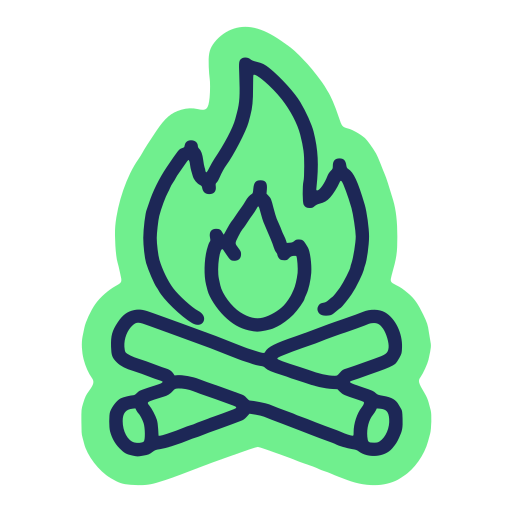
Aprender fazendo.
Desde 1961, educação por valores e contato com a natureza.
Informativa
Estreita e firme, em caixa alta. Datas, horários, números, programação e fitas-título.
Manuscrita
Letra de caderno de patrulha. Destaques curtos, assinaturas e anotações sobre fotos.
ÁÉÍÓÚ ãõç 0123456789
Atividades
Rua Hungria, 8 – Parque das Nações, Santo André
Acampamento de Grupo
Sempre Alerta!
Dois dias de trilha, pioneiria e fogo de conselho.
Uma peça pode juntar uma fonte de título e a Barlow Condensed para a data, como num convite com dia e horário em destaque.
| Fonte | Uso | Peso | Post de 1080 px de largura |
|---|---|---|---|
| Baloo 2 | Título de convite e festa | ExtraBold | 100–140 px, entrelinha 1,0 |
| Fraunces Soft | Título de aniversário e homenagem | Black | 100–150 px, entrelinha 0,95 |
| Barlow Condensed | Data, horário, número | ExtraBold, caixa alta | 120–220 px, entrelinha 0,9 |
| Caveat | Destaque de até 4 palavras | Bold | 110–180 px |
| Bricolage Grotesque | Frase de campanha, capa | ExtraBold | 110–170 px, entrelinha 0,95 |
| Ubuntu | Texto, rótulos e legendas | Regular e Medium | 32–44 px |
Procure o nome da fonte na lista de fontes do Canva. Se ela não aparecer, baixe no Google Fonts (Baloo 2, Fraunces, Bricolage Grotesque, Barlow Condensed, Caveat) e envie ao Kit de Marca do grupo, em Brand Hub › Brand Kit › Brand fonts › Upload a font. O Canva não aceita fontes variáveis: envie os arquivos da pasta “static” do download, um por peso. Da Fraunces, use o arquivo com “72pt SuperSoft” e “Black” no nome: é ele que tem o desenho macio mostrado aqui.
A flor de lis do símbolo também trabalha sozinha, como grafismo. Junto com as fitas e com fotos reais, ela dá unidade às peças sem repetir o logotipo.
Acampamento de Grupo
Festa das Nações
Retorno das atividades
Quando a marca entra sobre uma foto ou um fundo sem contraste, coloque-a numa tarja branca que sai pelas laterais da peça, no topo ou na base.
A regra vem do manual dos Escoteiros do Brasil e vale também para a marca nacional. Sobre fundo azul, a tarja pode ser azul com a marca negativa.
Para uma solução mais compacta, use as tarjetas do item 2.7.
Quando a foto é o assunto da peça, ela mostra jovens de verdade fazendo coisas de escoteiro. Paisagens da mata, do rio e da trilha servem como fundo.
Prefira
Evite
Fotos de Rodrigo Tetsuo Argenton, licença CC BY-SA 4.0, via Wikimedia Commons. Ao usar, mantenha o crédito. Paranapiacaba é um distrito de Santo André.
Para escrever sobre uma foto, aplique por baixo do texto uma sombra em degradê do Azul Inah, de 90% a 0%. Publique fotos de jovens apenas com autorização de uso de imagem assinada pelos responsáveis e, em posts públicos, não identifique jovens pelo nome completo.
Ícones próprios do grupo, para sinalizar temas, seções e listas em posts, cartazes e apresentações. Cada ícone é um desenho de linha contínua em Azul Inah, com traço de mão e cantos arredondados, sobre uma mancha de cor que acompanha o desenho, como um adesivo.
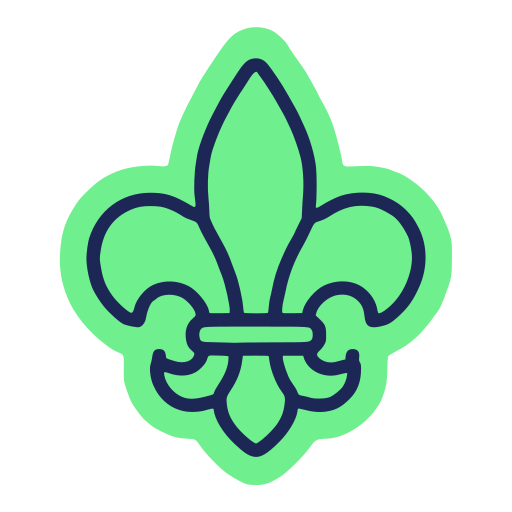
Flor de lis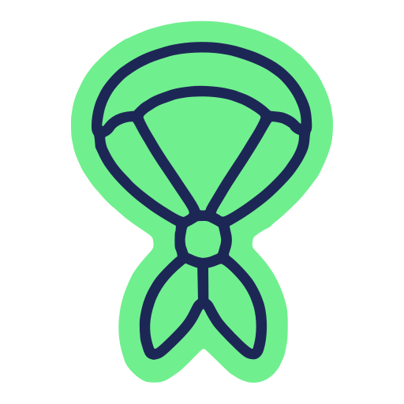
Lenço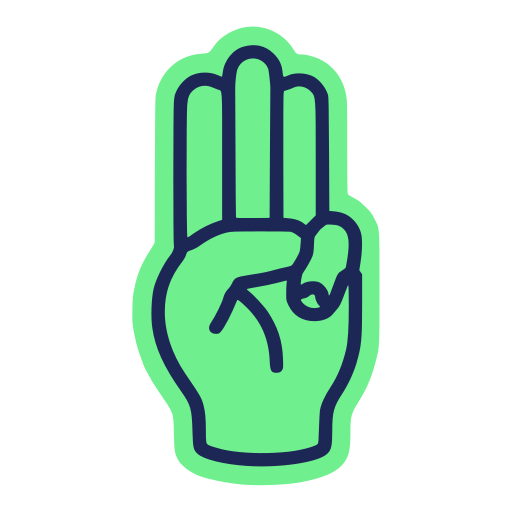
Sempre Alerta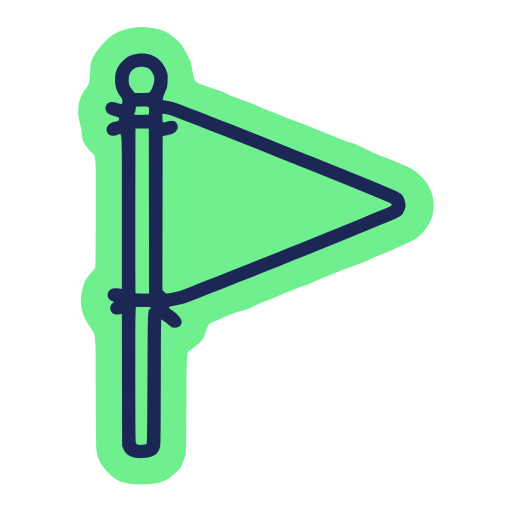
Bastão e bandeirola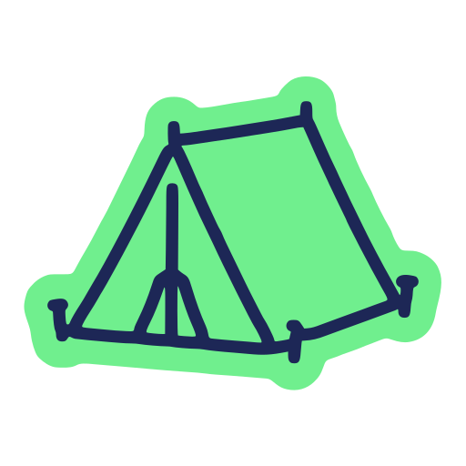
Barraca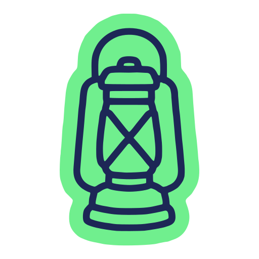
Lampião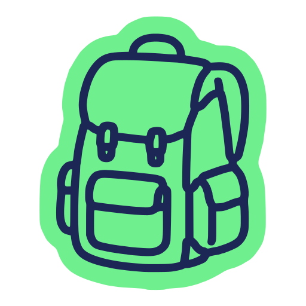
Mochila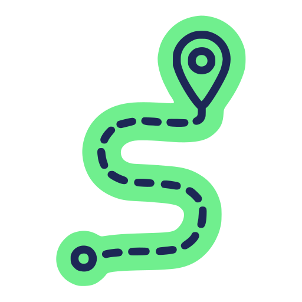
Trilha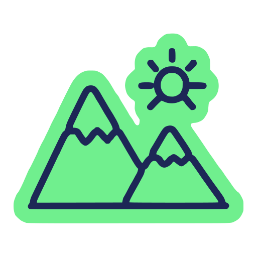
Montanha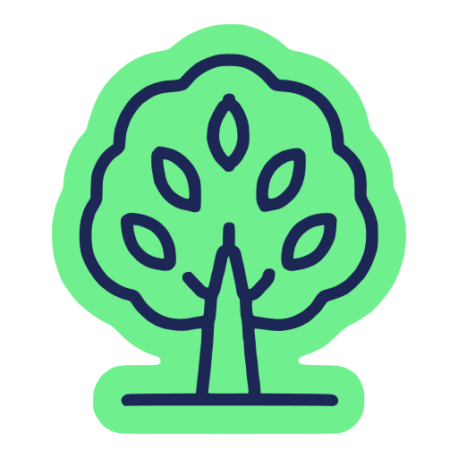
Árvore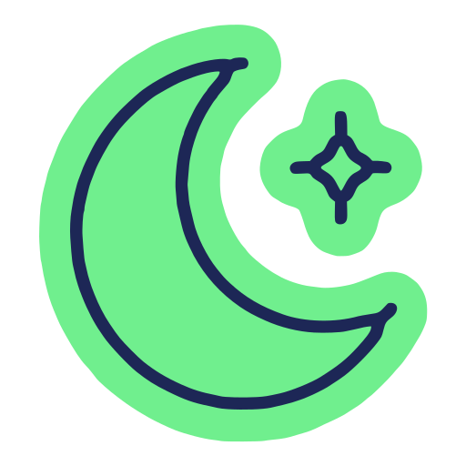
Noite de acampamento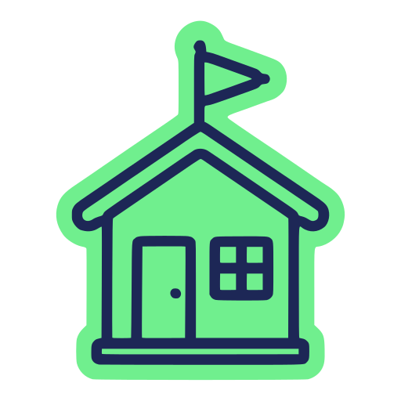
Sede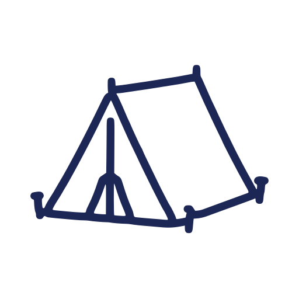
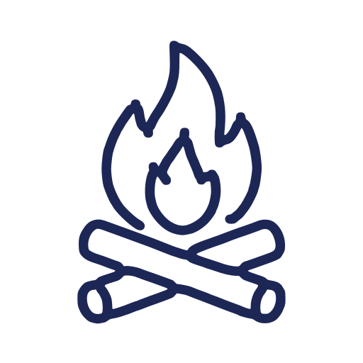
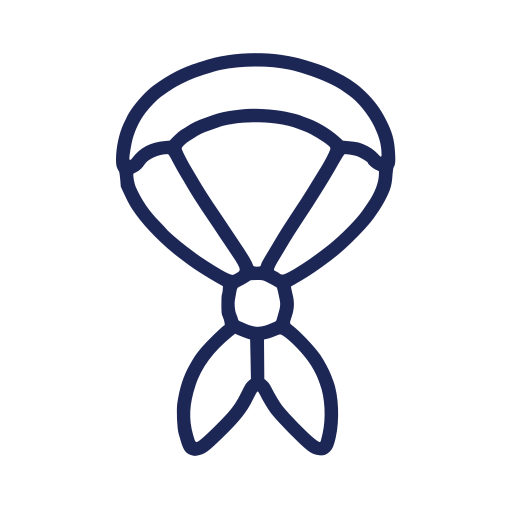
A mancha usa o Verde Inah. Em peças de uma paleta complementar, ela pode passar para Verde Folha, Rio ou Azul Céu; a linha continua em Azul Inah. Use a mesma cor em todos os ícones de uma peça.
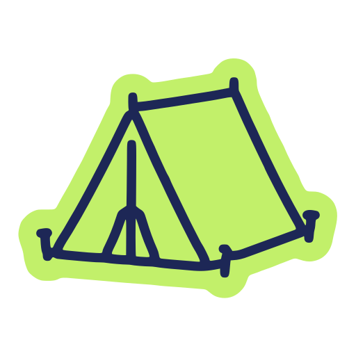
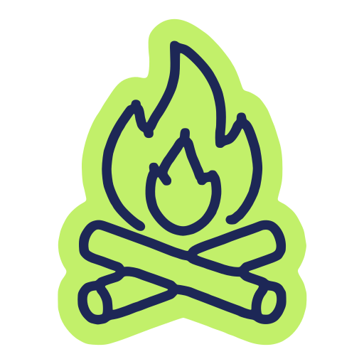
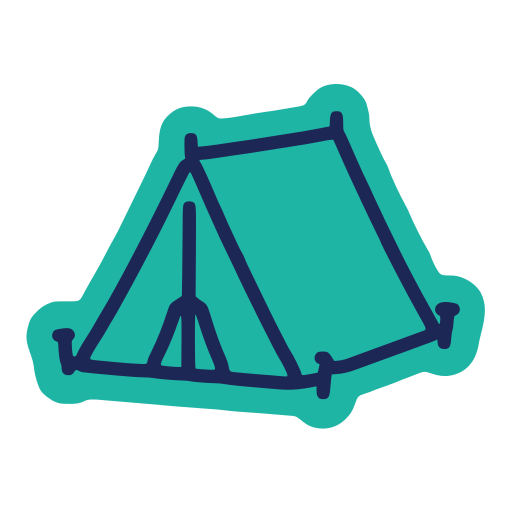
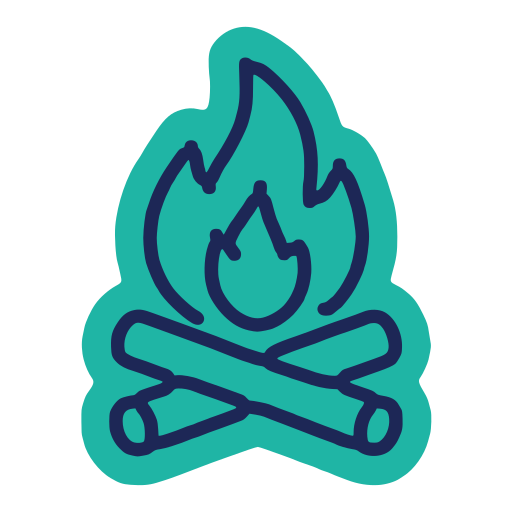
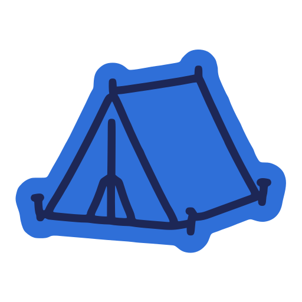
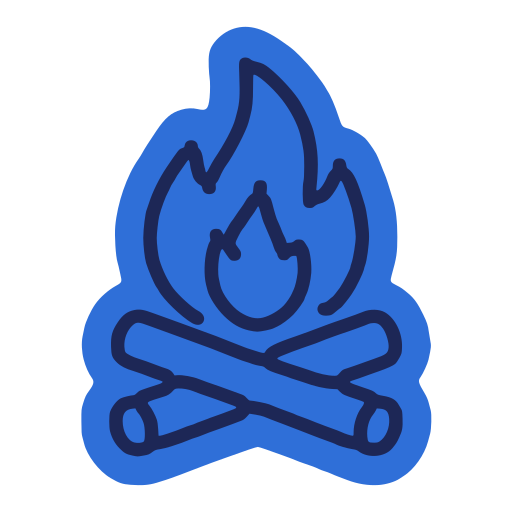
Cores dos ícones
Azul Inah
RGB 29 · 39 · 86CMYK 98 · 83 · 0 · 55
Verde Inah
RGB 112 · 239 · 142CMYK 45 · 0 · 49 · 0
Verde Folha
RGB 194 · 240 · 106CMYK 31 · 0 · 68 · 0
Rio
RGB 31 · 181 · 165CMYK 72 · 1 · 44 · 2
Azul Céu
RGB 47 · 111 · 216CMYK 83 · 54 · 0 · 0
Na impressão, o mínimo é de 8 mm para a versão padrão e de 6 mm para a versão de linha.
Cada ramo tem marca, cores e lettering definidos pelos Escoteiros do Brasil. O Inah usa essas marcas como recebidas e assina junto.

Brincar e aprender
Laranja principal
RGB 233 · 87 · 34CMYK 0 · 76 · 95 · 4
Amarelo
RGB 239 · 143 · 31CMYK 0 · 50 · 94 · 3
Turquesa
RGB 0 · 175 · 152CMYK 76 · 1 · 50 · 2
Marrom
RGB 143 · 95 · 54CMYK 36 · 60 · 89 · 29

Ser livre como os lobos
Amarelo principal
RGB 243 · 178 · 30CMYK 2 · 32 · 94 · 4
Azul escuro
RGB 1 · 66 · 133CMYK 98 · 69 · 0 · 25
Grafite
RGB 141 · 141 · 140CMYK 47 · 37 · 38 · 13
Cinza
RGB 201 · 201 · 201CMYK 0 · 0 · 0 · 21

Descobrir novos territórios com um grupo de amigos
Verde escuro principal
RGB 0 · 79 · 31CMYK 88 · 9 · 100 · 64
Verde
RGB 142 · 187 · 30CMYK 51 · 1 · 100 · 5

Viver aventuras, superar desafios
Grená principal
RGB 164 · 29 · 58CMYK 4 · 98 · 56 · 34
Azul escuro
RGB 0 · 77 · 153CMYK 98 · 69 · 0 · 10
Ciano
RGB 0 · 153 · 215CMYK 77 · 22 · 2 · 5

Explorar o mundo, ampliar horizontes
Vermelho principal
RGB 220 · 42 · 16CMYK 0 · 91 · 98 · 5
Roxo
RGB 82 · 68 · 145CMYK 82 · 83 · 0 · 9
Azul petróleo
RGB 1 · 150 · 159CMYK 79 · 9 · 33 · 16
O Inah é uma unidade local dos Escoteiros do Brasil e trabalha junto com ramos, parceiros e outras instituições. Quando várias marcas dividem a mesma peça, cada uma tem seu lugar e todas respiram.
Pais e parceiros precisam saber que lidam com uma instituição séria e filiada. Por isso a marca nacional acompanha as peças oficiais do grupo.

Nas peças de um ramo, a marca do ramo é a protagonista e o Inah assina ao lado. Nas peças do grupo todo, as marcas dos ramos aparecem em fila, todas da mesma altura.
RGB 0 · 47 · 115CMYK 100 · 78 · 0 · 34
RGB 0 · 156 · 196CMYK 76 · 11 · 9 · 13
RGB 255 · 237 · 2CMYK 5 · 3 · 94 · 0
RGB 192 · 188 · 1CMYK 24 · 7 · 98 · 12
RGB 0 · 125 · 50CMYK 84 · 2 · 98 · 33
Use essas cores só em peças sobre o movimento nacional. Nas peças do grupo, as paletas são as do Inah.
RGB 8 · 186 · 84CMYK 76 · 0 · 87 · 0
RGB 176 · 221 · 67CMYK 40 · 0 · 89 · 0
RGB 2 · 161 · 217CMYK 75 · 16 · 3 · 6
RGB 6 · 73 · 213CMYK 96 · 69 · 0 · 0
RGB 255 · 218 · 62CMYK 4 · 13 · 84 · 0
A campanha nacional de 2026 (“Fazendo coisas de escoteiro”) tem paleta, degradês e fontes próprias: Comba para títulos e Montserrat para subtítulos.
Quando o Inah divulgar a campanha, use a identidade do tema e assine com a marca horizontal do grupo. Nas peças do próprio grupo, use os degradês do capítulo 4, que seguem a mesma linguagem com as cores do Inah.
Exemplos das regras em peças que o grupo produz com frequência. Use como ponto de partida no Canva ou no editor de sua preferência.
Infográfico · dados fictícios
Uma composição de indicadores e gráfico para apresentar várias frentes de atividade em uma única peça.
Distribuição ilustrativa por atividade
Exemplo de composição para redes sociais. Os números não representam dados reais do grupo.
Faça parte do Inah
Vem ser
escoteiro!
Crianças e jovens de 6,5 a 21 anos. Sábados, das 14h às 17h, na nossa sede.
Aprender fazendo
Com contato com a natureza
Trilhas, acampamentos e muito ar livre, desde 1961.
Desde 1961
Mais de 60 anos em Santo André
Mais de 2 mil famílias já viveram o escotismo com a gente.
Convite
Fogo de Conselho
Celebração de aniversário do grupo.
Nome Sobrenome
Cargo no grupo
(11) 4475-1355 · @inah.147
gepim.com.br
Santo André, 6 de outubro de 2026
Prezadas famílias,
Este é um exemplo de corpo de texto em Ubuntu Regular 11 pt com entrelinha de 14 pt, alinhado à esquerda. Deixe uma linha em branco antes da data.
A marca do grupo fica no topo à esquerda, com no máximo 100 × 25 mm. O rodapé leva o nome completo, o endereço e a marca dos Escoteiros do Brasil.
Sempre Alerta,
Nome Sobrenome
Cargo no grupo
Grupo Escoteiro Professora Inah de Mello – 147/SP
Rua Hungria, 8 – Parque das Nações – Santo André – SP
gepim.com.br · @inah.147
Até sábado!
Nosso lema
Sempre Alerta para Servir
O Inah fala como um escotista que recebe uma família nova na sede: perto, animado e com as informações certas.
Convida e explica. “Vem ser escoteiro!” e “combinado?!” são do nosso jeito de falar.
Quem aparece e quem faz são os jovens. Os voluntários apoiam.
Toda chamada responde o quê, quando, onde e como participar.
Prestação de contas, assembleias e planejamento são públicos e escritos com clareza.
| Escreva | Observação |
|---|---|
| Viver Juntos · Melhor Possível · Sempre Alerta · Servir | Lemas com iniciais maiúsculas |
| Ramo Lobinho, Tropa Escoteira, Tropa Sênior, Clã Pioneiro | Nomes de ramos e seções com maiúscula |
| lobinhos e lobinhas, meninos e meninas | Linguagem que inclui todos |
| seniores e guias | Os jovens do Ramo Sênior |
| escotista, voluntário | Para os adultos do grupo. Todos são voluntários. Evite “chefe” |
| Profª | Com “ª” sobrescrito, como na marca |
Use sempre os arquivos originais da marca. Nunca recorte o logotipo de um print ou de outra peça.
| Arquivo | Conteúdo |
|---|---|
| logos/inah/logo 2.png | Marca horizontal, positiva |
| logos/inah/logo 1.png | Símbolo Inah, positivo |
| logos/inah/logo 4.png | Selo, positivo |
| logos/inah/flor logo.png | Flor de lis do símbolo |
| logos/inah/lettering logo.png | Lettering “Inah” |
| logos/inah/logo sticker.png | Símbolo em versão sticker |
| manual-identidade-visual/icones/svg/ | Ícones em SVG: padrão (Verde Inah) e linha; em cores/, as manchas em Verde Folha, Rio e Azul Céu. Editáveis no Canva e no Figma |
| manual-identidade-visual/icones/png/ | Os mesmos ícones em PNG de 512 px, com fundo transparente |
| logos/ramos/ | Marcas dos cinco ramos |
| logos/escoteiros do brasil/ | Marca nacional, horizontal e vertical |
| colors.yaml · typographi.yaml | Cores principais, ramos e tipografia |
Todas as versões de cor, as paletas, os degradês e as texturas descritos neste manual fazem parte da identidade oficial do grupo.
Sede
Rua Hungria, 8 – Parque das Nações
Santo André – SP
Atividades aos sábados, das 14h às 17h.
Canais